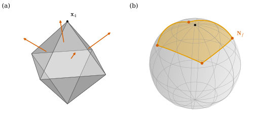
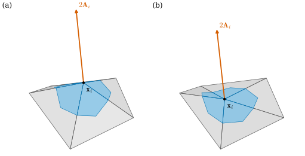
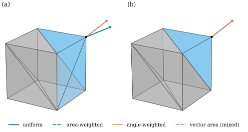

38.5 Discrete Normals and the Discrete Gauss Map
Goals
- face normal과 discrete Gauss map을 정의하고, vertex 둘레의 face normal들이 \(S^2\) 위의 spherical polygon을 이룬다는 것을 설명할 수 있다.
- vertex의 dual cell 위에서 \(\mathbf{N}\,dA\)를 적분한 discrete vector area를 정의하고, barycentric cell에서 그것이 \(\tfrac13\sum_fA_f\mathbf{N}_f\)이며 vertex 자신의 위치에 의존하지 않음을 증명할 수 있다.
- uniform, area-weighted, angle-weighted, vector-area의 네 vertex normal을 정의하고, 각각이 무엇을 보존하고 무엇을 잃는지 증명과 예로 비교하며 구현할 수 있다.
Prerequisites
- Section 38.3: \(\mathbf{N}\,dA = \tfrac12\,d\mathbf{x}\wedge d\mathbf{x}\) Proposition 38.3.5, vector area Definition 38.3.8, Proposition 38.3.10, Theorem 38.3.11, Exercise 38.3.2.
- Section 38.4: discrete immersion Definition 38.4.7, Corollary 38.4.10, discrete differential Definition 38.4.5.
- Chapter 33: link과 closed star의 boundary Proposition 33.2.22, dual cell Definition 33.6.1.
- Chapter 31: vertex normal의 세 가중치 Definition 31.2.1, Proposition 31.2.3.
Motivation
Section 38.4에서 mesh를 discrete immersion, 곧 locally injective simplicial map으로 정했다. smooth immersion에서는 그다음에 Gauss map \(\mathbf{N}\)을 정했다(Section 38.3). discrete immersion에서 face 안은 평평하므로 normal이 분명하다. 그러나 vertex에서는 여러 face가 꺾여 만나므로 tangent plane이 없고, normal을 “측정”할 수 없다. 그런데도 shading, normal 기반 loss, offset, 곡률 계산 등 많은 곳에서 vertex마다 normal 하나가 필요하다.
Chapter 31은 이 문제를 face normal의 가중 평균으로 풀고, 가중치마다 결과가 다르다는 것을 실험으로 보였다(Section 31.2). 이 절은 가중치를 고르는 원리를 smooth 쪽에서 가져온다. Section 38.3의 \(\mathbf{N}\,dA\)를 vertex 둘레의 작은 영역에서 적분하면 vector가 하나 나온다. 그것이 첫 번째 원칙적인 vertex normal이고, 다른 가중치들은 그것과 비교해 무엇을 얻고 잃는지로 평가한다.
Face Normals and the Discrete Gauss Map
Definition 38.5.1 (discrete Gauss map). orientation이 있는 simplicial surface 위의 discrete immersion \(\mathbf{x}\)와 positively oriented face \(f = (i, j, k)\)에 대하여
를 \(f\)의 unit normal(face normal)과 넓이라 하고, face마다 \(\mathbf{N}_f \in S^2\)를 주는 대응 \(f \mapsto \mathbf{N}_f\)를 \(\mathbf{x}\)의 discrete Gauss map(이산 가우스 사상)이라 한다.
분모는 Corollary 38.4.10(b)에 의해 \(0\)이 아니다. \((i, j, k)\)를 cyclic하게 바꾸어도 \((\mathbf{x}_j - \mathbf{x}_i)\times(\mathbf{x}_k - \mathbf{x}_i) = \mathbf{x}_i\times\mathbf{x}_j + \mathbf{x}_j\times\mathbf{x}_k + \mathbf{x}_k\times\mathbf{x}_i\)가 그대로이므로 \(\mathbf{N}_f\)는 face의 orientation에만 의존한다. 이 값은 face 위에서 smooth \(\mathbf{N}\,dA\)를 적분한 것과 맞는다. 평평한 triangle에서 \(d\mathbf{x}\)가 상수이므로
이다(Proposition 38.3.5, Exercise 38.3.2). 마지막 식은 face 둘레의 vector area다. discrete Gauss map은 face마다, 곧 dual vertex마다 값 하나를 주는 \(\R^3\)-valued dual 0-form이다(Definition 36.5.2).
vertex에는 값이 없다. 대신 vertex 둘레의 face normal들이 어떻게 놓여 있는지가 그 vertex의 기하를 알려 준다.
Proposition 38.5.2 (the normals around a vertex form a spherical polygon). Definition 38.5.1의 discrete immersion \(\mathbf{x}\)에서 interior vertex \(i\)의 face를 orientation 순서로 \(f_1, \dots, f_m\)이라 하자(\(f_k\)와 \(f_{k+1}\)은 edge \(ij_{k+1}\)를 공유하고, \(f_{m+1} = f_1\)). 그러면 (a) \(\mathbf{N}_{f_k}\)와 \(\mathbf{N}_{f_{k+1}}\)은 둘 다 \(\mathbf{x}_{j_{k+1}} - \mathbf{x}_i\)에 수직이고 서로 antipodal이 아니다. 따라서 둘을 잇는 짧은 대원 호(great arc) \(\gamma_k\)가 하나로 정해지고, 그 위의 모든 unit vector가 edge \(ij_{k+1}\)에 수직이다. (b) 호 \(\gamma_1, \dots, \gamma_m\)은 \(S^2\) 위의 닫힌 spherical polygon을 이룬다.
Proof. (a) \(\mathbf{N}_f\)는 \(f\)의 두 edge vector의 cross product 방향이므로 \(f\)의 모든 edge에 수직이다. 공유 edge \(ij_{k+1}\)도 그렇다. 두 face가 edge를 공유하므로 Corollary 38.4.10(c)에 의해 \(\mathbf{N}_{f_{k+1}} \neq -\mathbf{N}_{f_k}\)이다. antipodal이 아닌 두 unit vector를 잇는 짧은 대원 호는 하나뿐이고(같으면 한 점), 그 호는 두 vector가 펼치는 평면 위에 있으므로 그 평면에 수직인 edge 방향과도 수직이다. (b) \(f_{m+1} = f_1\)이므로 호들이 \(\mathbf{N}_{f_1}\)에서 출발해 \(\mathbf{N}_{f_1}\)으로 돌아온다.
호 \(\gamma_k\)는 “edge \(ij_{k+1}\)을 축으로 face \(f_k\)의 평면을 \(f_{k+1}\)의 평면까지 돌릴 때 지나는 normal들”이다. edge를 둥글게 깎아 낸 곡면을 상상하면 그 곡면의 normal이 정확히 이 호를 지난다. 호의 길이는 두 face normal 사이의 각, 곧 edge의 bending angle(Definition 39.5.5, 부호가 있는 양이다)의 절댓값이다. smooth surface의 Gauss map이 vertex 근처의 작은 영역을 \(S^2\)의 작은 영역으로 보내듯, discrete Gauss map은 vertex 하나를 이 spherical polygon으로 보낸다고 볼 수 있다. 볼록한 vertex에서 그 넓이가 vertex의 angle defect라는 것이 Section 40.1의 주제다. 볼록하지 않은 vertex에서는 polygon이 반대로 돌거나 스스로 꼬일 수 있어서, 넓이를 도는 방향까지 센 부호 있는 넓이로 읽어야 한다(Exercise 38.5.2).
Example 38.5.3 (the octahedron vertex). Figure 38.4.1의 octahedron에서 vertex \(\mathbf{x}_4 = e_3\)을 보자. 둘레의 네 face의 normal은 \((\pm1, \pm1, 1)/\sqrt3\)이고, 이웃한 normal은 한 성분의 부호만 다르다. 네 호는 \(e_3\)을 둘러싼 spherical quadrilateral을 이루고, 그 내각은 모두 \(2\pi/3\)이다. spherical polygon의 넓이 공식(Girard)으로 넓이는 \(4\cdot\tfrac{2\pi}{3} - 2\pi = \tfrac{2\pi}{3}\)이고, 이것은 vertex에 모인 네 정삼각형의 내각의 합이 \(2\pi\)에 모자라는 양 \(2\pi - 4\cdot\tfrac{\pi}{3}\)과 같다.
Verification: verify/v-38-5-discrete-normals.py
Figure 38.5.1의 왼쪽 (a)에서 주홍 화살표 네 개가 vertex \(\mathbf{x}_4\) 둘레 face의 normal이다. 오른쪽 (b)는 그 끝점들을 unit sphere에 옮긴 것이다. 네 주홍 점이 주황 대원 호로 이어져 북극(검은 점, \(\mathbf{x}_4\)의 방향)을 둘러싼 사각형을 만든다. vertex 하나가 \(S^2\) 위에서는 점이 아니라 넓이가 있는 영역이 된다. 이 넓이가 curvature를 재는 방법은 Chapter 40에서 다룬다. 볼록하지 않은 vertex에서는 사각형을 도는 방향이 뒤집힌다(Exercise 38.5.2).

The Discrete Vector Area
smooth 곡면의 한 점 근처에서 \(\mathbf{N}\,dA\)를 적분하면 \(\mathbf{N}(p)\)에 넓이를 곱한 것에 가까운 vector가 나온다. mesh에서도 vertex 둘레의 작은 영역에서 같은 적분을 하면 된다. 영역으로는 vertex의 dual cell(Definition 33.6.1)을 쓴다. 기하적으로는 고르는 방법이 여럿 있다. 가장 단순한 것은 barycentric cell이다. face \(f = (i, j, k)\)마다 \(\mathbf{x}_i\), edge \(ij\)의 중점, \(f\)의 무게중심, edge \(ik\)의 중점을 꼭짓점으로 하는 사각형을 잡고, 그것들을 \(i\)의 모든 face에서 모은 것이다. circumcentric(Voronoi) cell(Definition 36.5.6)과 obtuse triangle에서 그것을 고친 mixed Voronoi cell [Meyer03]도 쓴다. 어느 경우든 cell \(C_i\)는 각 face \(f \ni i\)에서 평평한 조각 \(C_i\cap f\)로 이루어진다. (이 절에서 \(C_i\)는 이 dual cell이다. Section 38.4의 \(C_i\)는 closed star였다.)
Definition 38.5.4 (discrete vector area). vertex \(i\)의 dual cell \(C_i\)를 하나 고정하자. \(C_i\) 위에서 Section 38.3의 vector area를 계산한
를 vertex \(i\)의 discrete vector area(이산 벡터 넓이)라 한다. 여기서 \(\abs{C_i\cap f}\)는 조각의 넓이이고, \(A_i := \sum_{f\ni i}\abs{C_i\cap f}\)를 \(i\)의 dual area라 한다.
두 번째 등식은 face 위에서 \(\mathbf{N} = \mathbf{N}_f\)가 상수이기 때문이다. 조각 넓이가 모두 양수이면(barycentric cell과 mixed Voronoi cell) 삼각 부등식에서 \(\abs{\mathbf{A}_i} \le A_i\)이고, 등호는 \(i\)의 모든 face가 같은 normal을 가질 때(star가 평면에 있을 때)뿐이다. circumcentric cell은 조각이 음수일 수 있어 이 부등식이 보장되지 않는다(Non-example 38.5.7).
Proposition 38.5.5 (barycentric discrete vector area). \(C_i\)가 barycentric cell이라 하자.
(a) \(\abs{C_i\cap f} = A_f/3\)이므로 \(\mathbf{A}_i = \tfrac13\sum_{f\ni i}A_f\mathbf{N}_f\)이다.
(b) interior vertex \(i\)의 link가 orientation 순서로 \(j_1, \dots, j_m\)(\(j_{m+1} = j_1\))이면
이다. 곧 \(\mathbf{A}_i\)는 link의 위치만으로 정해지고 \(\mathbf{x}_i\)에 의존하지 않는다.
(c) 닫힌 oriented mesh에서는 \(\sum_fA_f\mathbf{N}_f = 0\)이고 따라서 \(\sum_i\mathbf{A}_i = 0\)이다.
Proof idea: (b)와 (c)는 Section 38.3의 “vector area는 boundary만으로 정해진다”를 mesh에서 다시 한 것이다. 이웃한 face가 공유하는 edge의 기여는 방향이 반대라 지워지고, closed star의 boundary는 link이며(Proposition 33.2.22), 닫힌 mesh는 boundary가 없다.
Proof. (a) \(e = \mathbf{x}_j - \mathbf{x}_i\), \(e' = \mathbf{x}_k - \mathbf{x}_i\)라 하면 중점은 \(\mathbf{x}_i + e/2\), 무게중심은 \(\mathbf{x}_i + (e + e')/3\)이다. 사각형을 대각선으로 나눈 triangle \((\mathbf{x}_i, \mathbf{x}_i + e/2, \mathbf{x}_i + (e + e')/3)\)의 넓이는 \(\tfrac12\abs{\tfrac e2\times\tfrac{e + e'}{3}} = \tfrac{1}{12}\abs{e\times e'} = A_f/6\)이고, 다른 반쪽도 같은 계산으로 \(A_f/6\)이다. 따라서 조각의 넓이는 \(A_f/3\)이다.
(b) (38.5.2)에서 face \((i, j_k, j_{k+1})\)은 \(2A_f\mathbf{N}_f = \mathbf{x}_i\times\mathbf{x}_{j_k} + \mathbf{x}_{j_k}\times\mathbf{x}_{j_{k+1}} + \mathbf{x}_{j_{k+1}}\times\mathbf{x}_i\)를 준다. \(k\)에 대해 더하면 가운데 항이 오른쪽의 합이 되고, 나머지는 \(\mathbf{x}_i\times\sum_k(\mathbf{x}_{j_k} - \mathbf{x}_{j_{k+1}}) = 0\)(telescoping)이다.
(c) (38.5.2)에서 \(2\sum_fA_f\mathbf{N}_f\)는 모든 face의 oriented edge \((a, b)\)에 대한 \(\mathbf{x}_a\times\mathbf{x}_b\)의 합이다. 닫힌 consistently oriented mesh에서 각 edge는 정확히 두 face에 속하고 두 face가 그것을 반대 방향으로 지나므로(Definition 33.3.13) \(\mathbf{x}_a\times\mathbf{x}_b + \mathbf{x}_b\times\mathbf{x}_a = 0\)으로 지워진다. 마지막으로 각 face는 세 vertex에 \(\tfrac13A_f\mathbf{N}_f\)씩 주므로 \(\sum_i\mathbf{A}_i = \sum_fA_f\mathbf{N}_f = 0\)이다.
(b)는 처음 보면 이상하다. vertex의 “normal”을 정하는 양이 그 vertex의 위치를 보지 않는다. Figure 38.5.2가 이것을 보여 준다. 두 패널은 같은 link(불규칙한 다섯 점)에 서로 다른 \(\mathbf{x}_i\)를 붙인 star다. 하늘색 영역이 barycentric cell이고 그 넓이 \(A_i\)는 두 패널에서 다르다. 그런데 주홍 화살표 \(2\mathbf{A}_i\)는 두 패널에서 같다. 한 가지 설명은 Section 38.3이다. \(\mathbf{A}_i\)의 세 배는 closed star의 vector area이고, 그것은 boundary(link)만으로 정해진다(Theorem 38.3.11의 discrete 판). 다른 설명은 Chapter 41에서 나온다. \(\tfrac13\sum A_f\mathbf{N}_f\)는 mesh가 둘러싼 부피를 \(\mathbf{x}_i\)로 미분한 gradient다(Section 41.2). 부피는 원점과 각 face가 이루는 tetrahedron의 부피의 합이고 \(\mathbf{x}_i\)는 각 항에 한 번씩만 나오므로, 부피는 \(\mathbf{x}_i\)의 1차식이다. 그래서 그 gradient가 \(\mathbf{x}_i\)에 의존하지 않는다.

Vertex Normals
discrete vector area를 정규화하면 vertex normal이 하나 생긴다. 실제로 쓰이는 vertex normal은 모두 같은 꼴이다. face normal에 양의 가중치를 주어 더하고 정규화한다 [Cr §5.4].
Definition 38.5.6 (vertex normal). interior vertex \(i\)의 face \(f\)마다 양수 \(w_f\)를 주고 \(\sum_{f\ni i}w_f\mathbf{N}_f \neq 0\)일 때
를 가중치 \(w\)에 대한 vertex normal(꼭짓점 법벡터)이라 한다. 다음 네 가지를 쓴다(\(f = (i, j, k)\)).
- (U) uniform: \(w_f = 1\).
- (A) area-weighted: \(w_f = A_f\).
- (\(\theta\)) angle-weighted(tip-angle): \(w_f = \theta_i^{jk}\), \(f\)에서 \(\mathbf{x}_i\)의 내각.
- (V) vector-area: \(w_f = \abs{C_i\cap f}\), 곧 \(\mathbf{N}_i^V = \mathbf{A}_i/\abs{\mathbf{A}_i}\). 이 절의 계산에서는 mixed Voronoi cell을 쓴다.
Proposition 38.5.5(a)에 의해 barycentric cell의 (V)는 (A)와 같다. 그래서 (V)는 다른 cell을 쓸 때만 새로운 normal이다. Chapter 31은 (U), (A), (\(\theta\))를 같은 이름으로 소개했다(Definition 31.2.1). 여기서는 정의를 하나로 묶고 각각의 성질을 증명한다.
Non-example 38.5.7 (circumcentric cells give negative weights). circumcentric cell의 조각 넓이 \(\tfrac18(\ell_{ij}^2\cot\theta_k + \ell_{ik}^2\cot\theta_j)\)(Corollary 36.5.11)는 obtuse triangle에서 음수가 될 수 있다. 예를 들어 \(\mathbf{x}_i = (0, 0, 0)\), \(\mathbf{x}_j = (1, 0, 0)\), \(\mathbf{x}_k = (0.5, 0.1, 0)\)인 triangle(\(\mathbf{x}_k\)의 내각이 약 \(157^\circ\), 넓이 \(0.05\))에서 \(\mathbf{x}_i\)와 \(\mathbf{x}_j\)의 조각은 \(-0.1375\), \(\mathbf{x}_k\)의 조각은 \(0.325\)이다. 합은 넓이 \(0.05\)이지만 두 조각이 음수다. circumcenter가 triangle 밖에 있기 때문이다(dual edge의 길이가 음수가 되는 Example 36.5.12와 같은 현상이다). 이런 “가중치”로는 Definition 38.5.6의 조건 \(w_f \gt 0\)이 깨진다. mixed Voronoi cell은 obtuse triangle에서 조각을 \(A_f/4, A_f/4, A_f/2\)(obtuse corner가 \(A_f/2\))로 바꾸어 이 문제를 피한다 [Meyer03].
Verification: verify/v-38-5-discrete-normals.py
Proposition 38.5.8 (what the four normals preserve). interior vertex \(i\)에서 다음이 성립한다.
- (a) star가 평면에 있으면(모든 \(\mathbf{N}_f\)가 같으면) 네 vertex normal이 모두 그 평면의 normal이다.
- (b) 네 vertex normal은 rigid motion과 확대축소에 대해 equivariant하다. \(\mathbf{x} \mapsto Q\mathbf{x} + \mathbf{t}\)(\(Q \in \mathrm{SO}(3)\))이면 \(\mathbf{N}_i^w \mapsto Q\mathbf{N}_i^w\)이고, \(\mathbf{x} \mapsto c\mathbf{x}\)(\(c \gt 0\))이면 변하지 않는다.
- (c) angle-weighted normal은 triangulation에 무관하다. 곧 \(i\)의 star를 다른 triangle들로 다시 나누되 \(i\)는 vertex로 남고, \(\mathbf{x}_i\) 근처에서 새 star의 image가 옛 star의 image와 같은 점집합이며 edge가 아닌 각 점에서 같은 normal을 가지면, \(\mathbf{N}_i^\theta\)는 변하지 않는다. 특히 subdivision(옛 face마다 그 안의 새 face들로 나누는 것)과, 같은 평면에 놓인 두 triangle의 공유 edge를 다른 대각선으로 바꾸는 flip이 그런 경우다.
- (d) uniform normal, area-weighted normal, mixed Voronoi cell의 vector-area normal은 subdivision에 대해 불변이 아니다.
Proof idea: \(\mathbf{x}_i\)를 중심으로 하는 아주 작은 공 안에서 각 face는 중심각이 내각인 부채꼴이다. 그래서 angle-weighted 분자는 그 공 안에서 \(\mathbf{N}\,dA\)를 적분한 것의 상수배이고, 그 적분은 곡면만 보고 triangle을 보지 않는다.
Proof. (a) 분자가 \((\sum w_f)\mathbf{N}_f\)이다. (b) rigid motion에서 \(A_f\)와 \(\theta_i^{jk}\)와 cell의 조각 넓이는 그대로이고 \(\mathbf{N}_f \mapsto Q\mathbf{N}_f\)이다. 마지막 것은 \(Q \in \mathrm{SO}(3)\)에서 \(Q\mathbf{u}\times Q\mathbf{v} = Q(\mathbf{u}\times\mathbf{v})\)이기 때문이다. \(Q\)는 inner product를 보존하므로 \(Q(\mathbf{u}\times\mathbf{v})\)는 \(Q\mathbf{u}\), \(Q\mathbf{v}\)에 수직이고 길이가 \(\abs{\mathbf{u}\times\mathbf{v}} = \abs{Q\mathbf{u}\times Q\mathbf{v}}\)이며, \(\det Q = 1\)이라 \((Q\mathbf{u}, Q\mathbf{v}, Q(\mathbf{u}\times\mathbf{v}))\)는 positively oriented다. 이 세 성질이 cross product를 정하므로(Theorem 1.6.16(b), (d), (e)) 둘이 같다. 확대하면 \(\mathbf{N}_f\)와 각은 그대로이고 넓이는 모두 \(c^2\)배라 정규화에서 지워진다.
(c) \(\varepsilon \gt 0\)을 옛 star와 새 star의 모든 face \(f \ni i\)에서 \(\mathbf{x}_i\)부터 \(f\)의 맞은편 변까지의 거리보다 작게 잡자. 그러면 공 \(B = B_\varepsilon(\mathbf{x}_i)\)와 face \(f\)의 image의 교집합은 반지름 \(\varepsilon\), 중심각 \(\theta_i^f\)인 부채꼴이고, 그 넓이는 \(\tfrac12\varepsilon^2\theta_i^f\)이다. star가 embedded이므로(Proposition 38.4.9) 부채꼴들은 경계에서만 만나고, star의 image를 \(S\)라 하면
이다. 오른쪽은 점집합 \(S\cap B\)와 그 위의 normal만으로 정해지고 triangulation을 보지 않으므로, 옛 star와 새 star에서 같다. 따라서 분자가 같고 정규화한 \(\mathbf{N}_i^\theta\)도 같다. subdivision에서는 옛 face \(f\) 안의 새 face가 모두 \(f\)의 평면에 있고 같은 orientation을 가지므로 가정이 성립한다. flip도 두 triangle의 합집합(평면 사각형)과 그 normal을 바꾸지 않는다.
(d) 반례: face \(f = (i, j, k)\) 안에 점 \(p\)를 넣어 \((i, j, p), (i, p, k), (j, k, p)\)로 나누자. \(i\)의 face에서 \(f\)의 자리를 두 face가 차지하므로, uniform의 분자는 \(\mathbf{S} \mapsto \mathbf{S} + \mathbf{N}_f\)(가중치 \(1\)이 \(2\)로)가 되고, area-weighted의 분자는 \(A_f\)가 \(A_f - \operatorname{Area}(j, k, p)\)로 바뀌어 \(\mathbf{S} \mapsto \mathbf{S} - \operatorname{Area}(j, k, p)\,\mathbf{N}_f\)가 된다. 옛 분자 \(\mathbf{S}\)가 \(\mathbf{N}_f\)와 평행하지 않으면 \(\mathbf{S} + c\,\mathbf{N}_f\)(\(c \neq 0\))의 방향은 \(\mathbf{S}\)와 다르므로 normal이 실제로 바뀐다. 그런 예가 Exercise 38.5.4이고, 같은 예에서 mixed Voronoi cell의 vector-area normal도 \(22.00^\circ\) 움직인다.
(c)는 Chapter 31에서 유도로만 보인 Proposition 31.2.3을, 무엇이 같아야 하는지(\(\mathbf{x}_i\) 근처의 점집합과 normal)를 밝혀 증명한 것이다. (38.5.6)은 angle-weighted normal이 \(\mathbf{x}_i\)를 중심으로 하는 작은 공 안의 vector area의 방향이라는 뜻이기도 하다. 같은 곡면을 어떻게 삼각형으로 나누었는지를 보지 않는 normal은 네 가지 가운데 angle-weighted뿐이다. 반면 vector-area normal(barycentric이면 area-weighted)은 Section 38.3의 \(\mathbf{N}\,dA\)를 그대로 적분한 것이고, 부피의 gradient라는 해석을 가진다(Section 41.2). 하나의 smooth \(\mathbf{N}\)에 discrete 판이 여럿 있고, 무엇을 정확히 지키는지가 서로 다르다.
Example 38.5.9 (a cube corner). cube \([-1, 1]^3\)의 정사각형 여섯 개를 대각선으로 나누어 triangle 12개로 만들자. corner \(\mathbf{x} = (1, 1, 1)\)에 모이는 정사각형은 \(x = 1\), \(y = 1\), \(z = 1\)의 셋이고, 대각선이 corner를 지나면 그 정사각형에서 triangle 두 개(각 \(\pi/4\))가, 지나지 않으면 triangle 하나(각 \(\pi/2\))가 corner에 붙는다. 모든 triangle은 넓이가 \(2\)인 직각이등변 triangle이다.
- (a) pattern A(\(x = 1\)의 대각선만 corner를 지남): uniform과 area-weighted의 분자는 \(\mathbf{N}\)이 \(e_1\)인 face 두 개와 \(e_2\), \(e_3\)인 face 하나씩이라 \((2, 1, 1)\)에 비례한다. 곧 \(\mathbf{N}^U = \mathbf{N}^A = (2, 1, 1)/\sqrt6\)이고, 대칭적인 방향 \((1, 1, 1)/\sqrt3\)에서 \(19.47^\circ\) 벗어난다. angle-weighted는 정사각형마다 각의 합이 \(\pi/2\)이므로 \((1, 1, 1)/\sqrt3\)이다. mixed Voronoi cell의 vector-area normal도 \((1, 1, 1)/\sqrt3\)이다. 직각이등변 triangle의 Voronoi 조각이 직각 corner에서 \(1\), 예각 corner에서 \(\tfrac12\)이므로, 정사각형마다 corner의 조각 넓이의 합이 \(1\)이기 때문이다.
- (b) pattern B(어느 대각선도 corner를 지나지 않음): 네 normal이 모두 \((1, 1, 1)/\sqrt3\)이다.
곡면(cube의 겉면)은 그대로인데 대각선 하나를 바꾸었다고(flip) uniform과 area-weighted normal이 \(19.47^\circ\) 움직인다. angle-weighted normal은 Proposition 38.5.8(c)대로 움직이지 않는다.
Verification: verify/v-38-5-discrete-normals.py

Figure 38.5.3의 (a)에서 초록 선(파랑이 그 밑에 겹쳐 있다)은 하늘색 triangle이 두 개인 오른쪽 앞면 쪽으로 끌려 있다. face를 몇 개로 잘랐는지가 표가 되었기 때문이다. 주황 선은 정사각형마다 각을 \(\pi/2\)씩 세므로 대각선을 어떻게 그었는지 모른다. (b)에서는 세 정사각형이 똑같이 붙어 있어 네 normal이 하나로 겹친다. 그러면 언제나 angle-weighted를 쓰면 되는가? 다음 예가 그렇지 않음을 보인다.
Example 38.5.10 (accuracy on the running examples).
smooth 곡면에 내접한 mesh에서 vertex normal과 smooth normal의 각 차이의 최댓값을 보자(Implementation 상자). icosphere(level 2)에서는 \(\mathbf{x}_i/r\)과 비교해 uniform \(0.76^\circ\), area-weighted \(1.35^\circ\), angle-weighted \(0.60^\circ\), vector-area \(1.24^\circ\)로 angle-weighted가 가장 작다. torus_mesh(2, 0.8, 24, 16)에서는 바깥쪽 smooth normal과 비교해 uniform \(0.50^\circ\), area-weighted \(0.62^\circ\), angle-weighted \(0.93^\circ\), vector-area \(1.76^\circ\)로 순서가 거의 뒤집힌다. 격자를 두 배로 촘촘히 하면(\(48\times 32\)) 네 오차가 모두 약 \(\tfrac14\)로 줄어든다. 이 두 mesh에서는 넷 다 smooth \(\mathbf{N}\)에 가까워지지만, 주어진 한 mesh에서 어느 것이 가장 정확한지는 mesh에 달려 있다. torus mesh는 \(u, v\) 격자에서 온 규칙적인 mesh라 vertex마다 face의 배치가 같고, 그것이 uniform에 유리하게 작용하는 것으로 보인다(수치에서 읽은 해석이다).
Verification: verify/v-38-5-discrete-normals.py
Summary
- face normal \(\mathbf{N}_f\)는 face 위의 \(\mathbf{N}\,dA\)를 적분한 \(A_f\mathbf{N}_f = \tfrac12(d\mathbf{x})_{ij}\times(d\mathbf{x})_{ik}\)에서 온다. face마다 \(\mathbf{N}_f\)를 주는 것이 discrete Gauss map이다(Definition 38.5.1).
- vertex 둘레의 face normal들은 대원 호로 이어져 \(S^2\) 위의 spherical polygon을 이룬다(Proposition 38.5.2). 볼록한 vertex에서는 그 넓이가 Chapter 40의 angle defect다.
- dual cell 위의 \(\int\mathbf{N}\,dA\)가 discrete vector area이고, barycentric cell에서는 \(\tfrac13\sum A_f\mathbf{N}_f = \tfrac16\sum\mathbf{x}_{j_k}\times\mathbf{x}_{j_{k+1}}\)이라 vertex 자신의 위치에 의존하지 않는다. 닫힌 mesh에서 합은 \(0\)이다(Proposition 38.5.5).
- vertex normal은 face normal의 양의 가중 평균이다. uniform, area-weighted, angle-weighted, vector-area 가운데 subdivision에 불변인 것은 angle-weighted이고, area-weighted는 부피의 gradient 방향이다. 어느 것이 가장 정확한지는 mesh에 달려 있다(Proposition 38.5.8, Example 38.5.9, Example 38.5.10).
다음 절에서는 normal(외재적인 양)에서 metric(내재적인 양)으로 돌아간다. Chapter 36의 diagonal Hodge star와 cotan Laplacian이 휘어진 mesh에서도 그대로 쓰이고 edge 길이만으로 정해진다는 것을 보이고, 거꾸로 normal이나 edge 길이만으로 mesh의 모양을 되살릴 수 있는지 묻는다.
Exercises
Exercise 38.5.1 ★ Exercise 38.4.1의 regular tetrahedron에서 네 face의 \(A_f\mathbf{N}_f\)를 구하고 합이 \(0\)임을 확인하여라. 네 vertex normal이 모두 \(\mathbf{x}_i/\abs{\mathbf{x}_i}\)임을 대칭으로 설명하여라.
Solution
vertex \(m\)의 맞은편 face를 바깥쪽 orientation으로 잡자. 예를 들어 \(\mathbf{x}_0\)의 맞은편 face는 \((1, 3, 2)\)이고, \(\mathbf{x}_3 - \mathbf{x}_1 = (-2, 0, 2)\), \(\mathbf{x}_2 - \mathbf{x}_1 = (-2, 2, 0)\)이므로 \(A_f\mathbf{N}_f = \tfrac12(-2, 0, 2)\times(-2, 2, 0) = (-2, -2, -2) = -2\mathbf{x}_0\)이다. 넓이는 \(\abs{-2\mathbf{x}_0} = 2\sqrt3\)으로 한 변이 \(2\sqrt2\)인 정삼각형의 넓이와 같다. 대칭으로 vertex \(m\)의 맞은편 face는 \(A_f\mathbf{N}_f = -2\mathbf{x}_m\)이고, \(\sum_m\mathbf{x}_m = 0\)이므로 합이 \(0\)이다(Proposition 38.5.5(c)). vertex \(i\)에 모인 세 face는 \(\mathbf{x}_i\)를 축으로 하는 \(120^\circ\) 회전으로 서로 옮겨지고, 그 회전은 tetrahedron을 자기 자신으로 보내며 넓이, 각, cell을 보존한다. 따라서 네 가중 합은 모두 이 회전에 불변인 vector, 곧 축 \(\mathbf{x}_i\)에 평행한 vector다. 세 face normal이 \(-2\mathbf{x}_m\)(\(m \neq i\))에 비례하고 \(-\sum_{m\neq i}\mathbf{x}_m = \mathbf{x}_i\)이므로 방향은 \(+\mathbf{x}_i\)이다.
Exercise 38.5.2 ★★ 원점의 vertex와 link \(\mathbf{x}_1 = (1, 0, h)\), \(\mathbf{x}_2 = (0, 1, -h)\), \(\mathbf{x}_3 = (-1, 0, h)\), \(\mathbf{x}_4 = (0, -1, -h)\)(\(h = 0.5\)), face \((0, k, k+1)\)로 된 saddle 모양의 star를 보자. (a) 네 face normal을 구하여라. (b) link는 위에서 보아 반시계 방향인데 normal들의 spherical polygon은 \(e_3\) 둘레를 시계 방향으로 돎을 보여라. (c) vertex에서의 각의 합이 \(2\pi\)보다 큼을 확인하여라.
Solution
(a) \(\mathbf{x}_1\times\mathbf{x}_2 = (0\cdot(-h) - h\cdot 1,\ h\cdot 0 - 1\cdot(-h),\ 1\cdot 1 - 0) = (-h, h, 1)\)이고, 같은 계산으로 \(\mathbf{x}_2\times\mathbf{x}_3 = (h, h, 1)\), \(\mathbf{x}_3\times\mathbf{x}_4 = (h, -h, 1)\), \(\mathbf{x}_4\times\mathbf{x}_1 = (-h, -h, 1)\)이다. 정규화하면 \(\mathbf{N}_k = (\mp h, \pm h, 1)/\sqrt{1 + 2h^2}\)이다. (b) \(xy\) 성분의 방향이 \(135^\circ \to 45^\circ \to -45^\circ \to -135^\circ\)로 줄어들므로 위에서 보아 시계 방향이다. link는 \(0^\circ \to 90^\circ \to 180^\circ \to 270^\circ\)로 반시계 방향이다. 볼록한 vertex(Example 38.5.3)에서는 두 방향이 같았다. (c) 이웃한 두 edge vector 사이의 각은 \(\cos\theta = \inner{\mathbf{x}_1}{\mathbf{x}_2}/(\abs{\mathbf{x}_1}\abs{\mathbf{x}_2}) = -h^2/(1 + h^2) = -0.2\)이므로 \(\theta = 101.54^\circ\)이고, 합은 \(406.15^\circ \gt 360^\circ\)이다. polygon의 방향이 뒤집히는 것은 angle defect가 음수라는 것과 같은 현상이다(Section 40.1).
Exercise 38.5.3 ★★ Example 38.5.9의 cube에서 정사각형마다 대각선을 어떻게 그어도 corner \((1, 1, 1)\)의 angle-weighted normal과 mixed Voronoi vector-area normal이 \((1, 1, 1)/\sqrt3\)임을 증명하여라. uniform normal이 가질 수 있는 방향을 모두 나열하여라.
Solution
정사각형 \(x = 1\)에서 corner에 붙는 triangle은 대각선에 따라 각 \(\pi/2\)인 것 하나이거나 각 \(\pi/4\)인 것 둘이고, 어느 경우든 normal이 \(e_1\)이며 각의 합이 \(\pi/2\)이다. 다른 두 정사각형도 같으므로 angle-weighted 분자는 \(\tfrac\pi2(e_1 + e_2 + e_3)\)이다. 직각이등변 triangle(넓이 \(2\))은 obtuse가 아니므로 Voronoi 조각을 쓰고, 그 값은 직각 corner에서 \((4\cot\tfrac\pi4 + 4\cot\tfrac\pi4)/8 = 1\), 예각 corner에서 \((4\cot\tfrac\pi4 + 8\cot\tfrac\pi2)/8 = \tfrac12\)이다. 따라서 정사각형마다 corner의 조각 합이 \(1\)(직각 하나) 또는 \(\tfrac12 + \tfrac12\)(예각 둘)로 같고, 분자는 \(e_1 + e_2 + e_3\)이다. uniform의 분자는 \((c_1, c_2, c_3)\)(\(c_k \in \{1, 2\}\)는 정사각형 \(k\)에서 corner에 붙은 triangle의 수)이므로 방향은 \((1, 1, 1)/\sqrt3\), \((2, 1, 1)/\sqrt6\)과 그 순열, \((2, 2, 1)/3\)과 그 순열, \((2, 2, 2)\) 곧 다시 \((1, 1, 1)/\sqrt3\)이다. area-weighted도 모든 triangle의 넓이가 같으므로 uniform과 같다.
Exercise 38.5.4 ★★ pattern B의 cube에서 정사각형 \(x = 1\)의 triangle 가운데 corner \((1, 1, 1)\)에 붙은 것(넓이 \(2\))에 그 무게중심 \(p\)를 vertex로 넣어 세 triangle로 나누자. corner에서 uniform, area-weighted, angle-weighted, mixed Voronoi cell의 vector-area normal이 각각 \((1, 1, 1)/\sqrt3\)에서 몇 도 움직이는지 구하여라.
Solution
나눈 뒤 corner에는 \(x = 1\)에서 face 두 개(각 넓이 \(\tfrac23\))가 붙고, 그 내각의 합은 원래의 \(\pi/2\)이다. uniform의 분자는 \((2, 1, 1)\)이 되어 \(\arccos(4/\sqrt{18}) = 19.47^\circ\) 움직인다. area-weighted의 분자는 \((\tfrac43, 2, 2) \propto (2, 3, 3)\)이 되어 \(\arccos(8/\sqrt{66}) = 10.02^\circ\) 움직인다. angle-weighted는 \(\tfrac\pi2(1, 1, 1)\) 그대로이므로 \(0^\circ\)이다(Proposition 38.5.8(c)). mixed vector-area: corner \(c = (1, 1, 1)\), 이웃 \(a = (1, -1, 1)\), \(b = (1, 1, -1)\), 무게중심 \(p = (1, \tfrac13, \tfrac13)\)이라 하면 \(c - p = (0, \tfrac23, \tfrac23)\), \(a - p = (0, -\tfrac43, \tfrac23)\)이고 그 inner product가 \(-\tfrac49 \lt 0\)이므로 triangle \((c, a, p)\)는 \(p\)에서 obtuse다(\(108.4^\circ\)). \((c, p, b)\)도 대칭으로 같다. 따라서 mixed cell에서 corner의 조각은 각각 \(\tfrac14\cdot\tfrac23 = \tfrac16\)이고, \(x = 1\)의 가중치 합은 \(\tfrac13\)이다. 다른 두 정사각형의 조각은 그대로 \(1\)이므로 분자는 \((\tfrac13, 1, 1) \propto (1, 3, 3)\)이고 \(\arccos(7/\sqrt{57}) = 22.00^\circ\) 움직인다. 같은 곡면이고 corner 근처의 모양도 같은데 세 normal이 움직인다.
Exercise 38.5.5 ★ Coding. icosphere(level 2)에서 barycentric discrete vector area \(\mathbf{A}_i\)를 모든 vertex에서 계산하고, (a) \(\sum_i\mathbf{A}_i = 0\), (b) vertex 17을 \((0.03, -0.05, 0.08)\)만큼 옮겨도 \(\mathbf{A}_{17}\)은 그대로이고 그 이웃의 \(\mathbf{A}_j\)만 바뀜, (c) 모든 vertex에서 \(\abs{\mathbf{A}_i} \lt A_i\)임을 확인하고 비 \(\abs{\mathbf{A}_i}/A_i\)의 범위를 구하여라.
Solution
def vector_area_bary(V, F):
cross = np.cross(V[F[:, 1]] - V[F[:, 0]], V[F[:, 2]] - V[F[:, 0]]) # 2 A_f N_f
Av = np.zeros_like(V)
for c in range(3):
np.add.at(Av, F[:, c], cross / 6) # A_f N_f / 3 to each corner
return Av
V, F = dm.icosphere(2)
Av, area = vector_area_bary(V, F), dm.mass_barycentric(V, F)
W = V.copy()
W[17] += np.array([0.03, -0.05, 0.08])
changed = np.where(np.linalg.norm(vector_area_bary(W, F) - Av, axis=1) > 1e-14)[0]
ratio = np.linalg.norm(Av, axis=1) / area
print(np.abs(Av.sum(axis=0)).max() < 1e-12, 17 in changed, sorted(changed) == dm.neighbors(F)[17])
print(f"|A_i| / A_i in [{ratio.min():.4f}, {ratio.max():.4f}]")
True False True
|A_i| / A_i in [0.9843, 0.9855](a)는 Proposition 38.5.5(c), (b)는 (b)다. vertex 17을 옮기면 그것을 link에 가진 이웃 vertex들의 vector area만 바뀐다. (c)의 비가 \(1\)보다 조금 작은 것은 star의 face들이 조금씩 꺾여 있어 normal이 일부 상쇄되기 때문이다. smooth 곡면에서는 작은 영역에서 이 비가 \(1\)에 가까워진다.